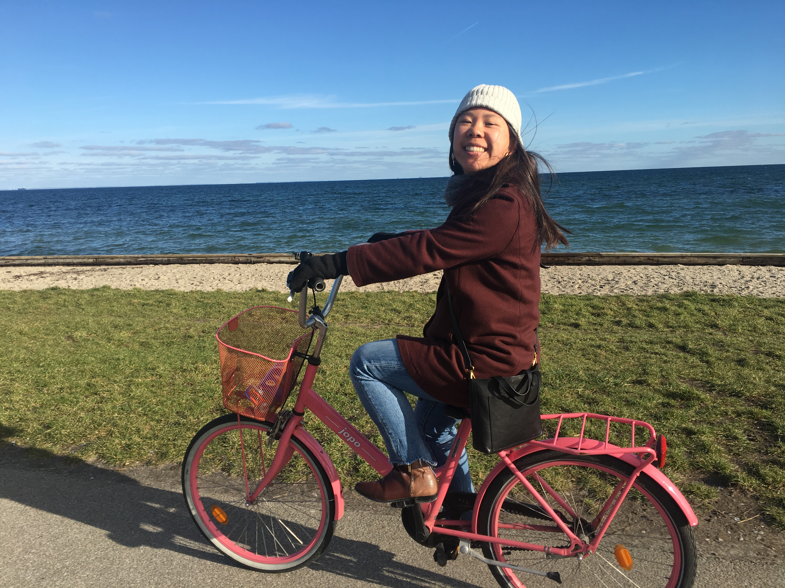

A 5-month Adventure
A remarkable experience with amazing food, history, and architecture
After five months in Europe, I feel like I've gotten a taste of what various cultures are like and how they differ from my own. While I know I can't generalize a country based on one experience or one city, these are the beautiful experiences that I will remember. I recently heard someone say "climate-controlled comfort zones", and I believe that everytime you go somewhere new, whether you walk down the street or hop on a plane, you make a little chink in that comfort zone. Because why would you want to stay in your climate-controlled comfort zone when there are so many other exciting things going on outside it.
Some key takeaways
- Maintain a routine. I know that's hard to do when you travel, but even getting into the groove of the airport helps ground you.
- Don't live alone. It's hard enough to make friends in a new country. Give yourself a break and live with other people. Especially in Denmark when it's dark at 4pm in the winter, you'll want the company.
- Prioritize what you want to spend money on. In Europe, there is a never ending number of churches and museums and memorials. Feasibly, you won't get to them all. It doesn't make sense to. So pick the buildings that you are willing to pay an entrance fee for. Pick the meals that you want to eat out. I went dumpster diving for the first time in Skagen, Denmark. It was a Sunday evening, the town felt empty, and the bins were loaded. We came away with a collection of fruit and vegetables, non-expired lox, cheese, and many loaves of bread. You don't have to dumpster dive, but cut costs where you can.
- Copenhagen is a great home base. With an airport 20 minutes away from the city center by public transportation and still lots of flights to choose from, Copenhagen was a great stepping stone to see other parts of Europe. This small big city gives insight into Scandinavian culture, keeps you off your feet and on a bike, and somehow convinces you to try cinnamon rolls at every bakery.
- Stay alert. While Copenhagen feels very safe as there are no eyes following you, the same is not true for other cities. If traveling solo, I recommend staying in a female-only room at a hostel. Personally, I felt more comfortable after having a couple of bad experiences.
- "Authentic" is not a real experience. You can't chase authenticity by trying to hunt down the best goulash or the most local pastry. The best way is to come across it. After going to so many cities, I remember most the times when I was with other people and we did the randomest things, different things, and just explored. Keep it real by not planning too much and learning to go with the flow.
Denmark
January 2019 - May 2019

Rainbow panorama
Aarhus

Design museum
Copenhagen

Aamanns 1921
Copenhagen

Dyrehaven
Copenhagen

Lille Tilde
Copenhagen

KU south campus
Copenhagen

Ipsen & Co
Copenhagen